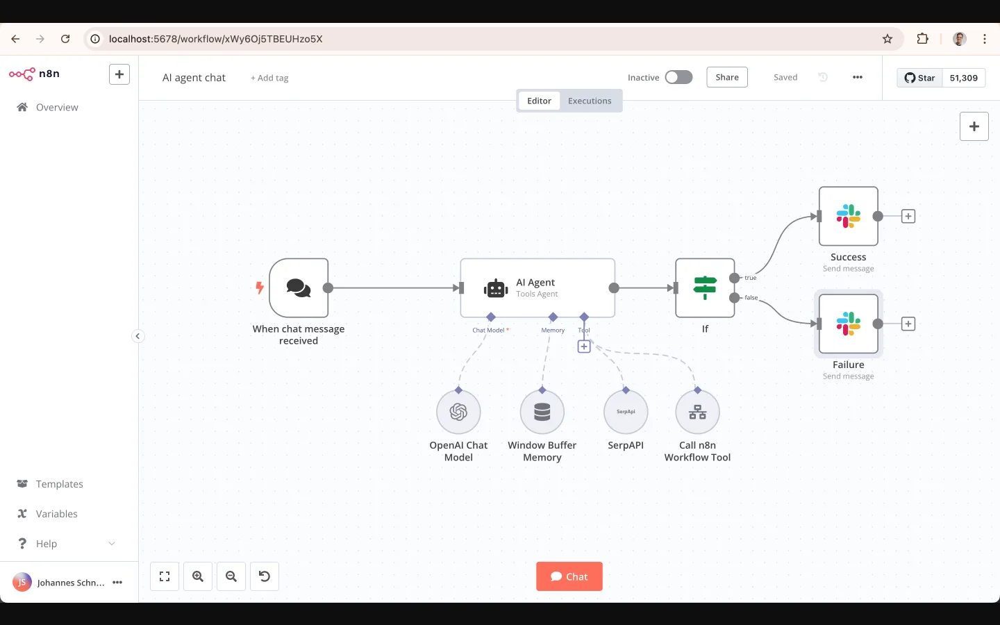
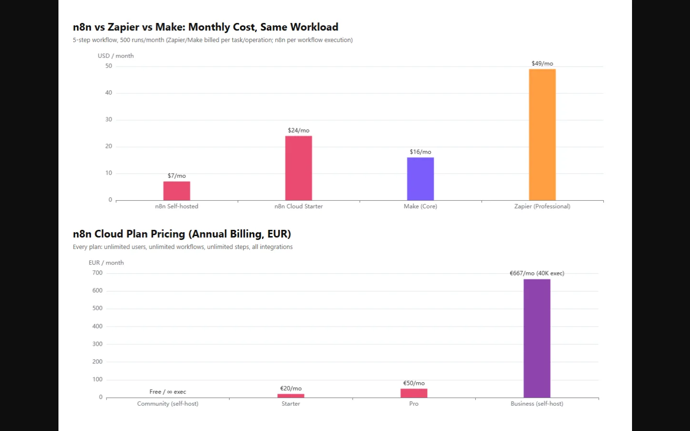
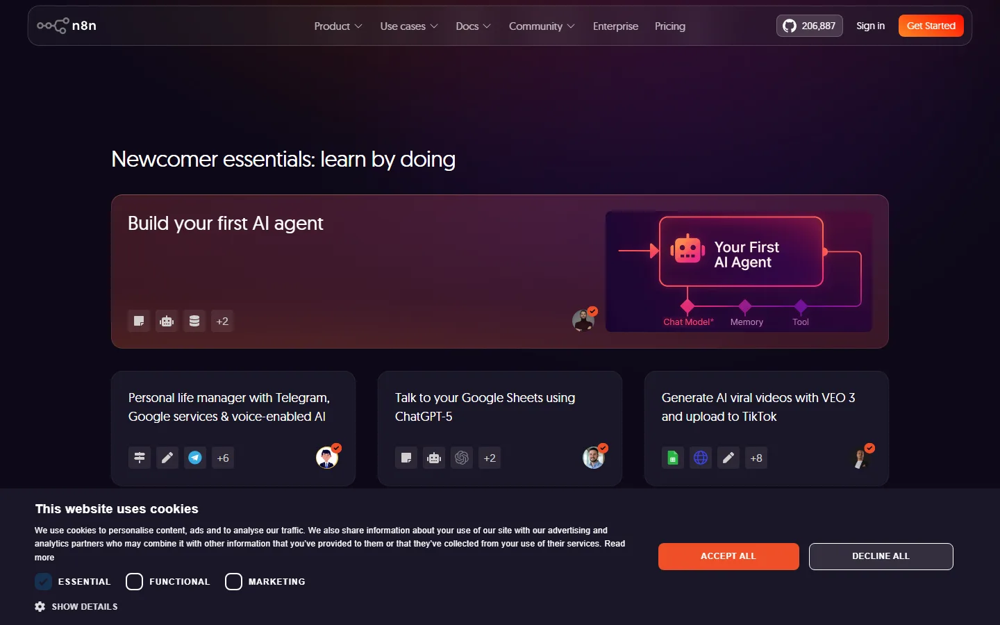

用途: 评测文章 n8n-review-2026（草稿，未发布）
1. 真实产品界面: n8n AI Agent 工作流编辑器（来自 n8n 官方 GitHub README 实拍）
2. 价格对比图: n8n vs Zapier vs Make 月度成本对比（自绘图表）

来源: n8n-io/n8n GitHub README（本地运行 localhost:5678 实拍）
展示: AI agent chat 工作流 — Chat Model + Window Buffer Memory + SerpAPI + Call n8n Workflow Tool + If 分支 + Slack 成功/失败通知

来源: 基于 n8n 官方定价页数据自绘（ECharts）
上图: 同工作量下 n8n/Zapier/Make 月度成本；下图: n8n Cloud 各档年付价格

来源: n8n.io/workflows 模板页截图
展示: "Build your first AI agent" 学习模块与 AI 模板（备选，未插入文章正文）